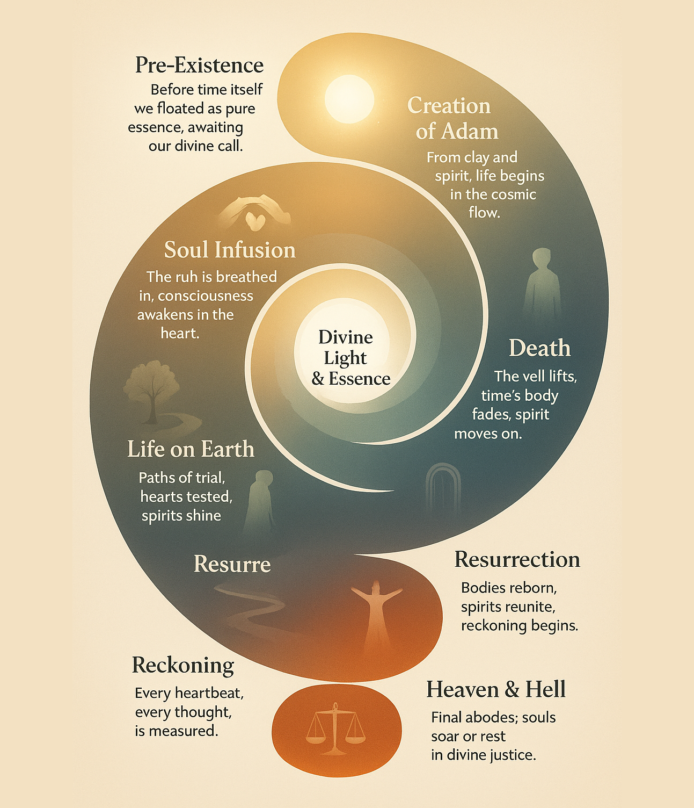

A journey through the story of existence- Spiral Timeline of Creation and Civilizations- From Creation to Today
This spiral timeline visualizes the journey of existence—from the origin of life, the rise of civilizations, to pivotal events shaping humanity.

1. In the beginning, the pure essence unfolds...
2. Stars and planets dance to divine rhythm...
3. Life emerges, hearts awaken, consciousness begins...
4. Civilizations rise, knowledge flows, wisdom spreads...
5. Prophets guide, stories inspire, humanity learns...
6. Time cycles, lessons echo, the future awaits...
2. Stars and planets dance to divine rhythm...
3. Life emerges, hearts awaken, consciousness begins...
4. Civilizations rise, knowledge flows, wisdom spreads...
5. Prophets guide, stories inspire, humanity learns...
6. Time cycles, lessons echo, the future awaits...
Where to Explore Next
Understanding this journey sets the foundation for seeing the hidden patterns in physics, metaphysics & consciousness, and matter & energy, biology. Next, explore the Physics Proof-of-Concepts pages to witness how these ideas manifest in measurable reality.
Explore Physics Proofs